HAMT: An Efficient Persistent Map
Thomas Gilray (@tomgilray )
Kristopher Micinski (@krismicinski)
1 Introduction
2 Motivation: Persistent, Immutable Maps
Let’s say we wanted to implement a phonebook using a mutable map:
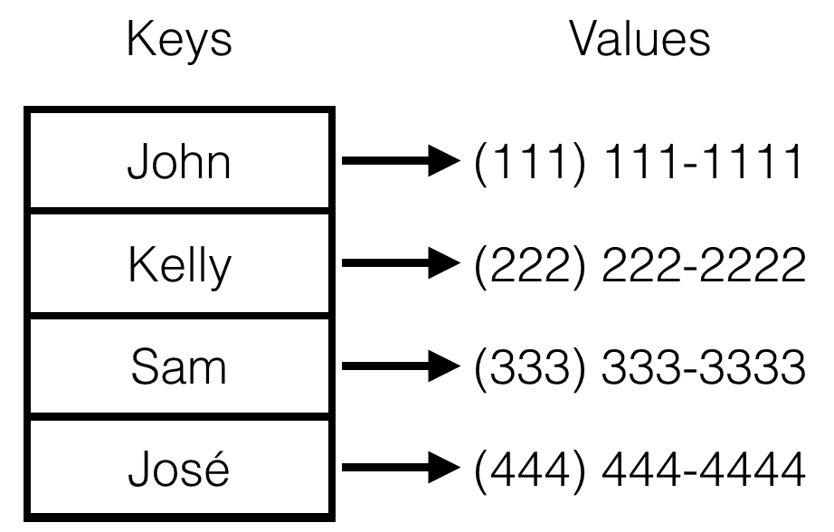
When a friend’s number changes, we would make a corresponding change to the map:
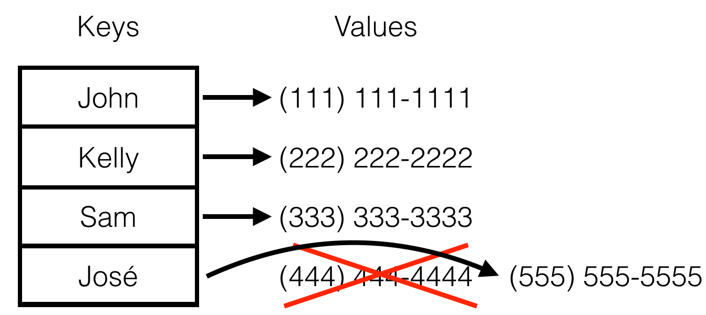
Now imagine I want to keep a history of my phonebook. What I really want is a time slider that allows me to see the state of the phonebook at any point in time:
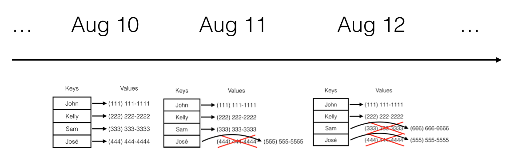
The problem with a mutable map is that I invalidate older copies of the phonebook when I update keys that exist in the phonebook at earlier times. Instead, I want an immutable data structure that supports methods:
map->insert(key,value), which gives me back a new map containing all the same pairs as the old one, except for the newly inserted pair (or with the value updated if key was already in the map). That is, I want a functional insert operation that consumes and produces immutable maps.
map->lookup(key), that efficiently looks up a record in the map.
map->remove(key), that deletes a record from the map. Just like insert, this should both consume and produce a functional map. The map returned should not contain key and the map consumed should not be mutated and still contains key if it did already.
Note that we could technically obtain a persistent map by simply cloning a mutable map each time we perform a change:
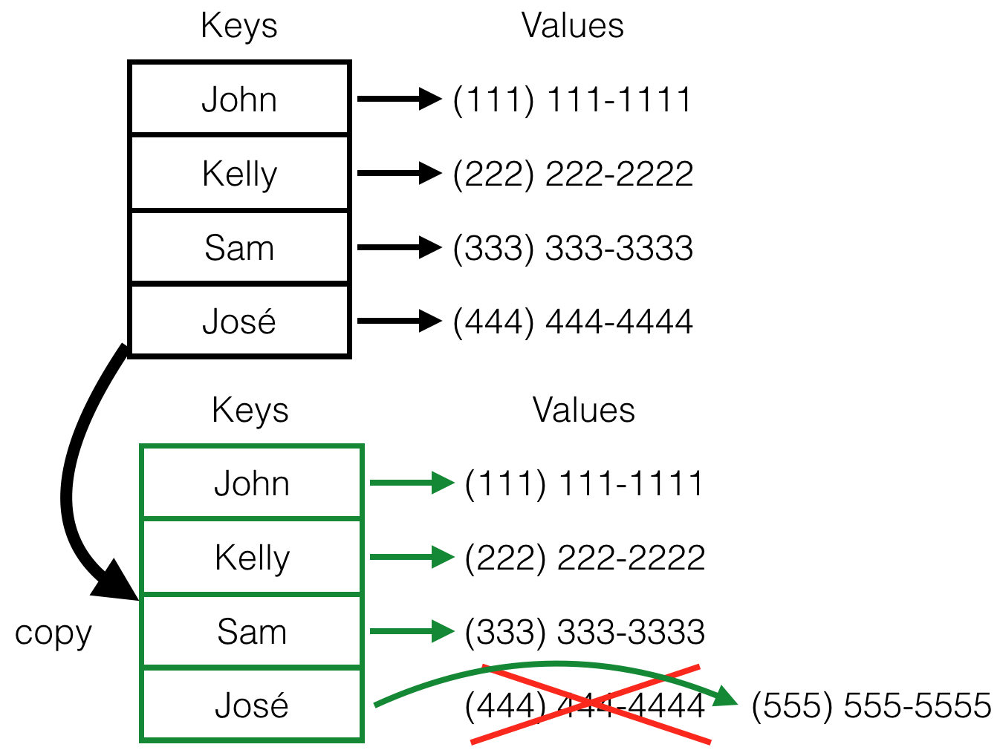
But this uses linear time, linear space, and is slow in practice, which falls far short of what we’d like. As we’ll see next, the key to a more efficient data structure is immutability because this enables sharing (productive persistance where portions of maps that are unchanged may be shared across multiple versions).
2.1 A naïve persistant map: association lists
A simple example of an immutable, persistant data-structure is an association list. Association lists are linked lists consisting of key-value pairs. To perform map->lookup(k), we walk down the links of map until we find a link with the corresponding key; if we reach the end of the list instead, the key was not found.
When association lists are updated, either new keys are appended to the front which shadow older keys, or the list is fully traversed to maintain an invariant that at most one copy of a key has a binding at a time. For space efficiency, we present the later kind so that sequences of inserts cannot build up arbitrarily large data structures that encode only a small number of visible keys. Thus, to perform map->insert(k,v), we traverse each link of map (as in lookup) to ensure that no pair for key already exists. If it does, we update the list from that point, emiting a new list that shares a tail with the input list. If it does not, we append a link which contains k,v to the end of the list, rebuilding the common prefix:
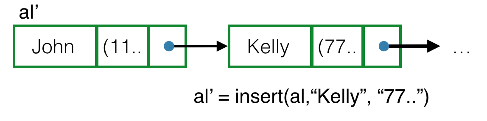
This means our lookup times can be in O(n), but then so are our insert, remove and space overheads. In the case where keys that exist in an input map are updated or removed, the returned list will share its tail with the input association list. Both lists are immutable and it’s perfectly safe for us to exploit this fact by reusing portions of the input map to encode portions of the output map where they don’t need to change. In the case of an association list, this doesn’t affect the complexity class of our operations (only improves constant factors) but it does illustrate the principle of sharing and persistance that will make our HAMT data structure performant.
Operation |
| Runtime |
| Space overhead |
insert |
| O(n) |
| O(n) |
lookup |
| O(n) |
| - |
remove |
| O(n) |
| O(n) |
In practice, association lists are not a particularly efficient data structure on their own, but, in addition to illustrating the value of immutability and persistance, they form a component of our final HAMT implementation. To obtain HAMT, we’ll use a tiered tree structure that, along with sharing at each of its tiers, can terminate in association lists (that can also be shared between HAMT instances).
2.2 Implementing association lists
Let’s see how we implement association lists. First, we’re going to represent each individual link as a key, value, and pointer to the next node. We want the key and values to be of arbitrary (but specified) types, so we’re going to use C++ templates (generic programming). Let’s start by stubbing out the class definition:
1 template <typename K, typename V> 2 class LL 3 { 4 typedef LL<K,V> LLtype; 5 6 public: 7 const K* const k; 8 const V* const v; 9 const LLtype* const next; 10 11 LL<K,V>(const K* k, const V* v, const LLtype* next) 12 : k(k), v(v), next(next) 13 { } 14 15 const V* find(const K* const k) const; 16 17 const LLtype* insert(const K* const k, const V* const v) const; 18 19 const LLtype* remove(const K* const k) const; 20 }
Note on lines 7-9 that all of our pointer types have const qualifiers, meaning we won’t be able to modify the data being pointed at, or the pointers to the keys and values themselves. This is exactly the behavior we want for our association list; otherwise, sharing portions of old association lists would be impossible as modifying them could update all maps that had previously been derived from them. Our constructor therefore initializes fields and all other operations are const.
A find or lookup algorithm is defined as a straightforward traversal that returns a const V* or null pointer.
1 const V* find(const K* const k) const 2 { 3 if (*(this->k) == *k) 4 return v; 5 else if (next) 6 return next->find(k); 7 else 8 return 0; 9 }
The insert algorithm descends the association list checking for a matching key (line 3). If it matches,
we rebuilt the current node using an updated value LLtype(this->k, v, next) (line 4) and placement new
syntax new ((T*)ptr) T(...) which constructs a value at an existing location, ptr—
1 const LLtype* insert(const K* const k, const V* const v) const 2 { 3 if (*(this->k) == *k) 4 return new ((LLtype*)GC_MALLOC(sizeof(LLtype))) 5 LLtype(this->k, v, next); 6 else if (next) 7 return new ((LLtype*)GC_MALLOC(sizeof(LLtype))) 8 LLtype(this->k, this->v, next->insert(k, v)); 9 else 10 { 11 const LLtype* const link1 = 12 new ((LLtype*)GC_MALLOC(sizeof(LLtype))) LLtype(this->k, this->v, 0); 13 const LLtype* const link0 = 14 new ((LLtype*)GC_MALLOC(sizeof(LLtype))) LLtype(k, v, link1); 15 return link0; 16 } 17 }
In the case where the current link doesn’t match but has a non-null tail, the current node is rebuilt to refer to whatever LLtype pointer is returned from a recursive insert (line 6). If the end of the list is reached with no key found, we may insert the new element on the front or back of the list. In this case we show the latter for simplicity.
3 Next: Trees and Tries
A standard data structure in any programmer’s arsenal is the sorted tree. Trees give you nice logarithmic runtime costs when balanced.
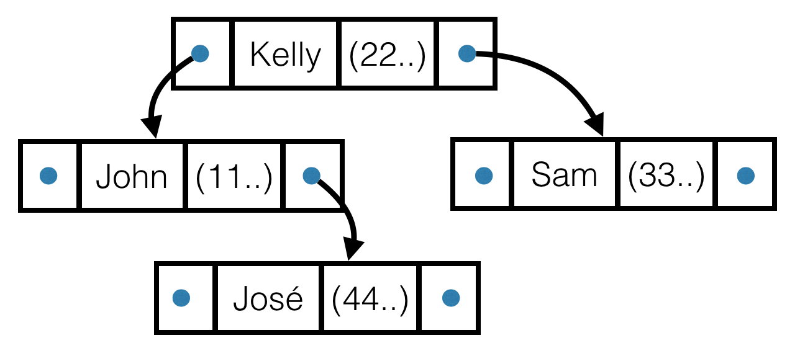
The problem with trees is that in the worse case they give lookup performance no better than a list:
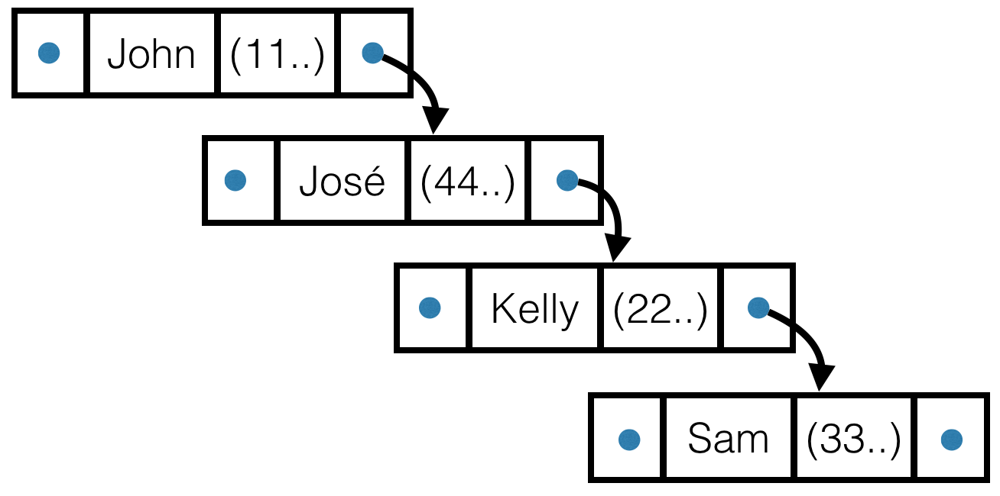
This happens when elements are inserted in order. A number of techniques exist to avoid this worst-case behavior. For example, Red-Black trees automatically rebalance upon each insert operation. Unfortunately, this requires mutability so an existing tree may be rewired into a more balanced version of itself.
A way of constructing a balanced binary tree probabilistically would be to randomize elements before inserting them. This would avoid the worst-case behavior of inserting elements in sorted order. A way to effect this kind of probabalistic balancing, but without changing insertion order, would be to hash each key and insert into the tree based on its hash. So long as we only care to match keys exactly and do not need to exploit an ordering on keys, this is a sound alternative. Each node in the tree is now a:
A pointer to the left and right subtrees
A hash of the key for that cell, and
A pointer to a linked list of key-value pairs
The reason for the last item is that hashes have the possibility of collision: two values can hash to the same thing. If we use a sufficiently large hash, and a good hash function, this will happen only rarely. Here’s an example of what our hash-tree looks like, with the linked lists highlighted in green:
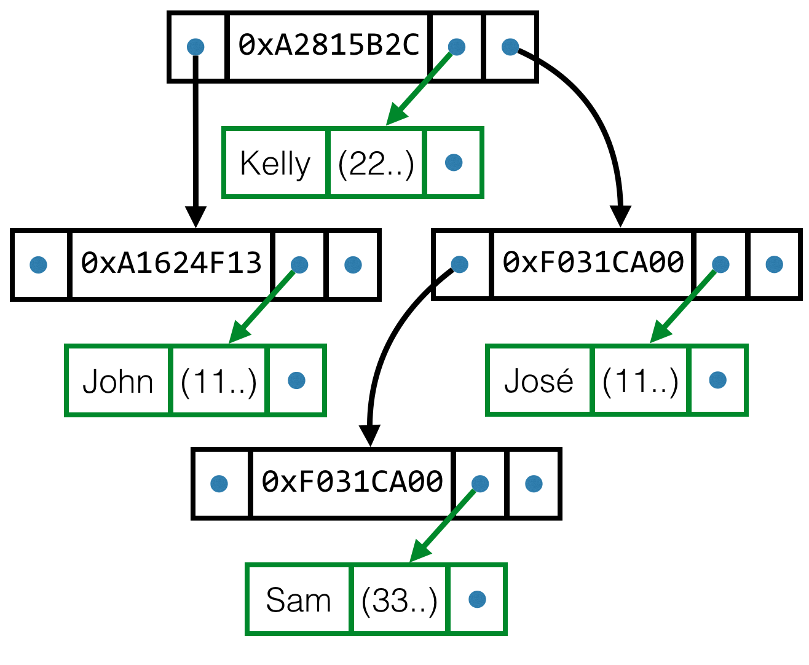
3.1 Worst case behavior
Note that we have done nothing to improve the worst-case behavior of our binary tree. We could still end up in this scenario (note that the linked lists are elided):
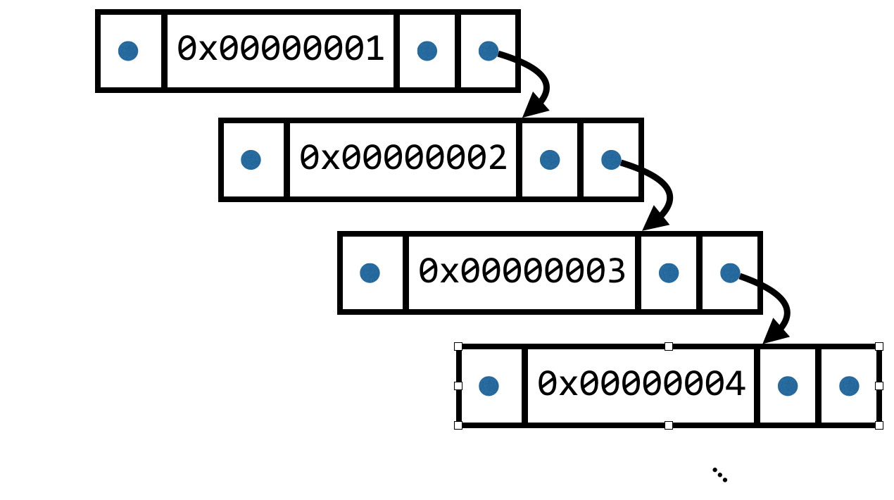
This means that the complexity of operations on our tree is still O(n). Let’s tackle that next.
3.2 From sorted trees to tries (prefix trees)
Turning our sorted tree into a hash-tree doesn’t buy us any performance improvement, but it helps us make our way towards exploiting some of the unique properties of the hash-tree.
Hashes naturally form a common-prefix ordering:
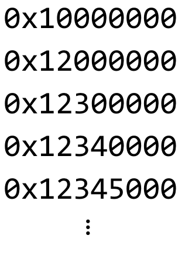
Each element in the sequence is a suffix of the element before it. We can also represent the elements elements of a binary tree:
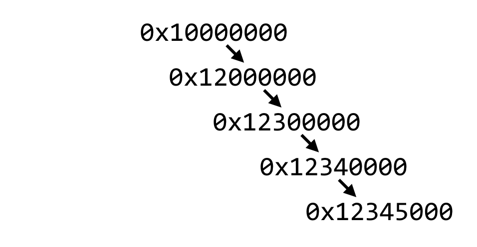
However, note that if we force our tree to be a trie (pronounced "try"), it is not possible to represent the worst-case configuration shown above: 0x00000001 is not a prefix of 0x00000002.
3.2.1 Exploiting the Trie
If we force our trees to be tries, and assuming we use a 64-bit hash, we can reduce the maximum depth of our trees from O(n) to just 64! The way we do this is to represent our key-value pairs using a trie, where each node represents a partial hash, a prefix. Note that–for now–we have left off the value component of the key-value pairs and are simply drawing the hashes. We will get back to that shortly.
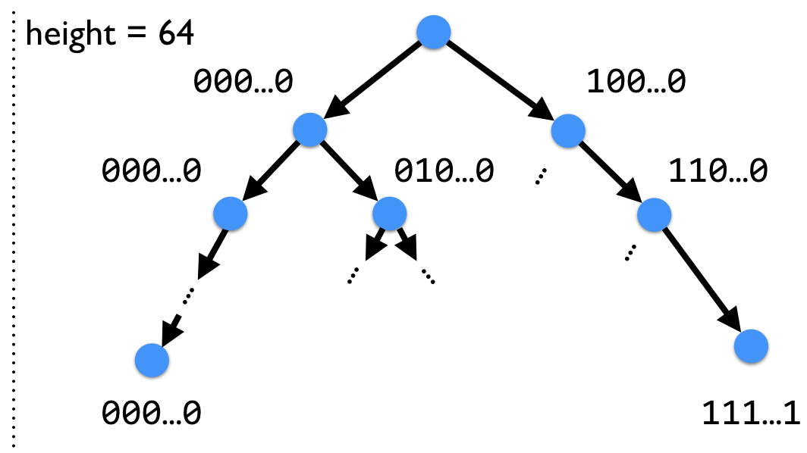
Notice that each child node is arranged such that it is a prefix of its parent. Our trie can be viewed as a decision tree, at each step answering the question, "is the next bit zero or one?" Keep in mind that, at leaf nodes, we will still have to keep a key-value association list. It remains possible for us to have (improbable) hash collisions.
3.3 A few optimizations
Our trie now avoids the worst-case behavior we observed with a sorted binary tree, which appears better in theory, but has a few undesirable traits in practice:
A maximum depth of 64 is still quite a large tree to traverse in the worst-case
In the case that the map is relatively sparse–i.e., that it doesn’t contain many key-value pairs, we are still required to traverse all the way down to the leaf just to lookup one key-value pair.
3.3.1 Reducing the Height
To solve the first problem, we can simply switch from a binary tree to an n-ary tree: in our case, we’re going to hold 64 "buckets" at each node, rather than 2. By doing this, we lower the maximum depth of our tree (to 10-11). Instead of each node deciding whether a bit will be a 0 or a 1, each node will decide whether the next 6 bits of the hash are 0x00 to 0x3F:
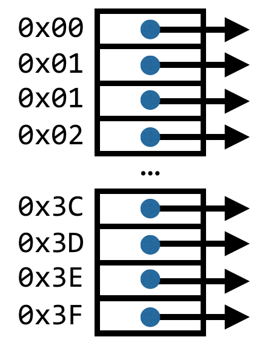
Now our trie will have a structure like this:
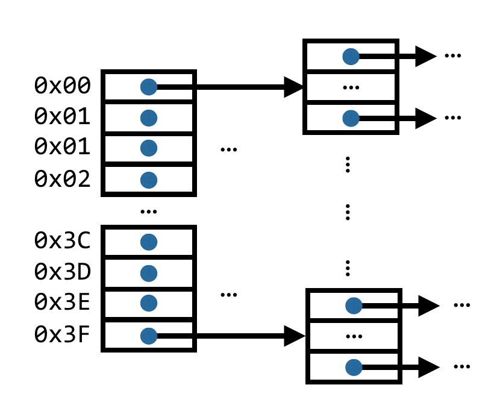
3.3.2 Build It Lazily
It turns out that most of the time, our trie won’t really need to be of depth ten. In fact, in the following scenario, we’d waste a lot of time traversing pointers:
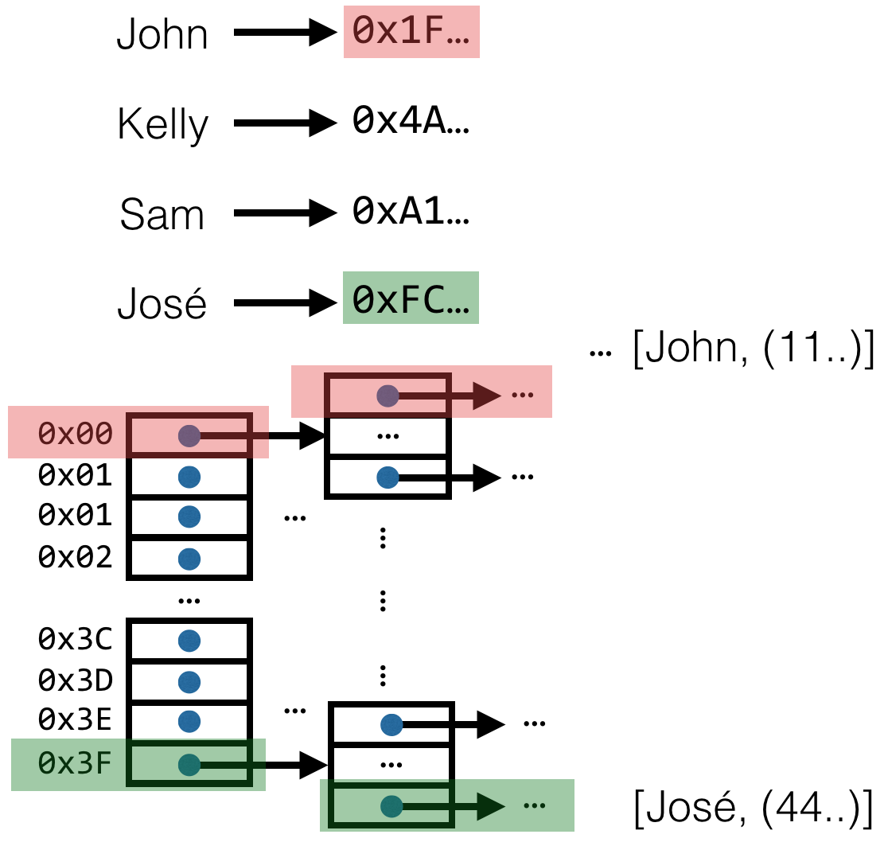
This is because each key occupies a different bucket for the top level node. In fact, we could just use a configuration like the following instead:
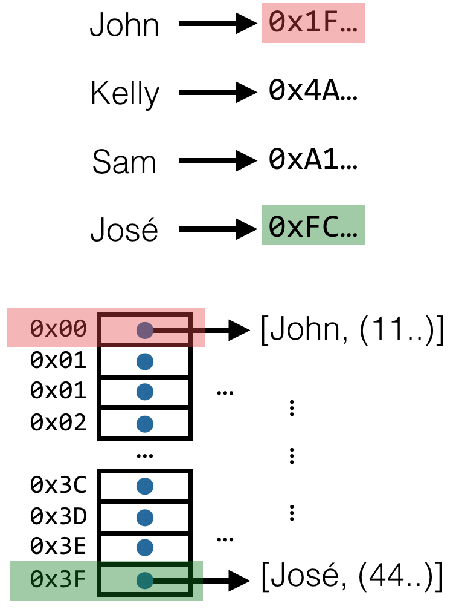
What we ultimately want is a data structure that stores the key-value pair as close to the top as possible until it has to keep things separate.
To do that, the nodes in our trie will either hold 64 buckets for child nodes, or will hold an association list of key-value pairs. Remember, they can’t possibly hold one unique key-value pair because hash collisions are always possible. This optimizes our trie so that in cases that we don’t need additional depth, we won’t be using it. Additionally, assuming we’re using a suitable hash function, we should get relatively good dispersion between buckets. This means that–probabilistically–we’ll be holding most things closer to the top until the map is holding a lot of key-value pairs.
One way to think about this is that we will build the nodes in our trie lazily, only using as many bits of the hash as we need. If we can differentiate all of the hashes of our key-value pairs using their first six bits, we will only have one "layer" of the trie that we need to traverse untilxs we reach the data we want to access.
If we lay out our trie in this manner, we need to be careful about how insertion happens. For example, consider a trie which stores a record for José near the top. Let’s assume the string "José" hashes to 0xFC0.. (we will only need the first 12 digits for this example). José’s record will be stored in the key-value pair association list for the 0x3F bucket of the first node. Now consider what happens when we want to insert a key-value pair for Sam, which (for the purposes of illustration) we will assume hashes to 0xFFF. Because the first six binary digits of the hahes for José and Sam both hash to 0x3F, we will need to split that bucket into another bucket, holding another 64 values.
Here’s an illustration of how insert works given this configuration:
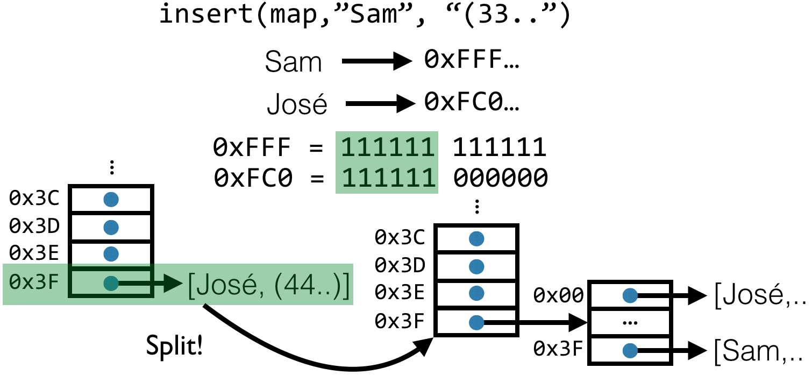
3.3.3 Reducing the Memory
When the trie is relatively sparse, assigning 64 buckets to each node is inefficient in terms of both space (occupied by each node) and time (spent copying memory to allocate new nodes). It turns out that we can use a low-level trick to compress sparse nodes in the trie.
The trick is to use a bitmap to represent which child hashes are actually stored in a node. Instead of each node holding 64 buckets, a node will hold a single 64-bit value, bitmap, along with a variable-length buffer of pointers to child nodes, data. The node will be laid out so that, if position i in bitmap is a 1 (i.e., bitmap & (0x01 << i) > 0), it will represent the fact that the bucket i is occupied. We will lay out data such that its length is equal to the number of 1s in the binary representation of bitmap. The ith index into data will be regarded as the bucket occupied by the (i+1)th occurrence of 1 in the binary representation of bitmap.
This is tricky, so here’s a picture:
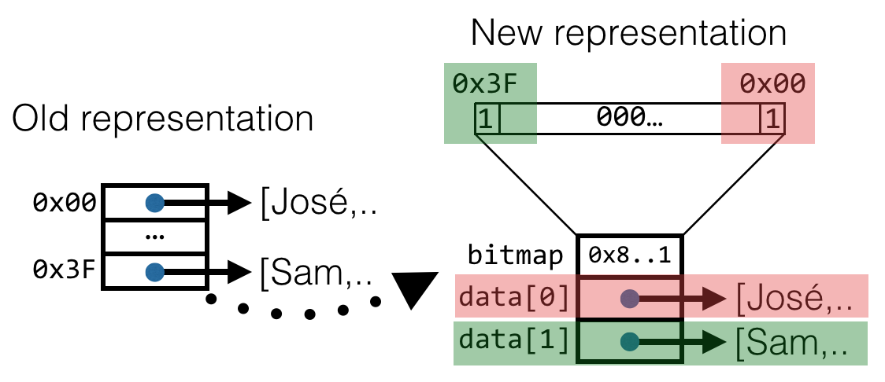
The old representation of a trie node is shown on the left. The new, more efficient, representation is shown on the right. In the old representation we can see 64 buckets, with José occupying the first bucket at position 0x00, and Sam occupying the last at position 0x3F. Between them is 62 null pointers to pieces of hashes which have not yet been inserted into the trie.
In our new representation we see the bitmap and a data array of two elements. Because José’s hash occupies position 0x00 in the old representation, the 0th bit of bitmap will be set to 1. Similarly, because Sam’s hash occupied position 0x3F in the old representation, the 63th bit of bitmap will be set.
To access Sam’s record, we lookup position 63 in bitmap and check to see whether it is set to 1. If not, it will signify that no record exists for Sam in this node. Assuming it is, we then count the number of 1s below position 63 in the bitmap. This operation is called popcount (short for "population count," which counts the number of 1s in a machine word), and built into many modern instruction sets, so that it executes quite efficiently. We then use popcount of the part of bitmap below the 63th bit to index into data.
By doing this, we reduce the amount of space stored for each node from 64 to popcount(bitmap). In practice, this means that we get good performance when the trie is sparse, and when the trie is dense (i.e., most nodes hold close to 64 child elements) the performance is hardly worse than an implementation without compression.
4 Implementing HAMT
The combination of these techniques gives us the Hash Array-Mapped Trie (HAMT). Now we’ll step through an efficient implementation of HAMT that uses these concepts.
4.1 The node representation
Nodes are represented by a templated C++ class KV<K,V,d>, where:
K is the template parameter for the key’s type
V is the value’s type
d is the depth of the node being represented
The last parameter deserves some explanation. Imagine how nodes are to be implemented. At each depth in the HAMT, a node handles a 6-bit piece of a 64-bit hash. In our implementation, the root node (which we’ll implement soon as a class called hamt) will hold 4 of those bits, while the 60 remaining bits will be handled by sub-tries whose maximum depth is 10. After depth 10, all values which would share the same bucket also share the same hash, and so the trie devolves into an association list.
To do its work, each inner node in HAMT must know which 6-bit piece of the hash its working on. We could handle this by computing this value as we traverse down through the trie nodes, gradually moving from the first four bits (for the top level node, which holds four bits), to the next six bits, to the next six bits, etc. However, instead, we’re going to use template metaprogramming to generate a template-specialized version of the node class for each depth from 1 to 10. This means that the C++ compiler will generate KV<K,V,0> through KV<K,V,9> for us using our template, and we will manually specialize KV<K,V,10> to be an implementation that may use an association list. In essence, we have traded various dynamic checks that would otherwise happen at runtime for a specialization of the code at compile time.
Here’s the C++ code representation for our inner nodes:
1 // A key-value pair; this is both one row in Bagwell's underlying AMT 2 // or a buffer of such KV rows in an internal node of the data structure 3 template <typename K, typename V, unsigned d> 4 class KV 5 { 6 typedef KV<K,V,d> KVtype; 7 typedef KV<K,V,d+1> KVnext; 8 9 public: 10 // We use two unions and the following cheap tagging scheme: 11 // when the lowest bit of Key k is 0, it's a key and a K*,V* pair (key and value), 12 // when the lowest bit of Key k is 1, it's either a bm (bitmap) in the top 63 bits with a 13 // KV<K,V,d+1>* v inner node pointer when d is less than 9 or it's just a 1 and a pointer to a 14 // LL<K,V>* for collisions 15 union Key 16 { 17 const u64 bm; 18 const K* const key; 19 20 Key(const K* const key) : key(key) { } 21 Key(const u64 bm) : bm(bm) { } 22 } k; 23 24 union Val 25 { 26 const KVnext* const node; 27 const V* const val; 28 29 Val(const KVnext* const node) : node(node) { } 30 Val(const V* const val) : val(val) { } 31 } v; 32 // ... 33 }
We use C++ unions to allow this node to either be a key-value pair, or an inner node, to implement the trick in section Build It Lazily. There are two possibilities for this node:
It is a single key-value pair. In this case, we will simply use the K*, V* pair. The bits of k will encode a pointer to the key object, which we can use on subsequent lookups. The reason we can do this is that pointers to keys will always be aligned, and so the lowest bit will never be zero! This allows us to use that lowest bit to tag these unions; when it is a zero, k is a key and v is a stored value.
There is more than one matching key for this prefix. In this case, we set the lowest bit of k to 1. The rest of k will be a 63-bit bitmap, and v will point to a compressed buffer, data, of keys and values as discussed in section Reducing the Memory.
The lowest level of our HAMT will either store keys and values or, where collisions exist, the value 1 for k and a pointer to an association list for v. This uses the linked list we implemented in section Implementing association lists:
1 // A template-specialized version of KV<K,V,d> for the lowest depth of inner nodes, d==10 2 // After this we have exhausted our 64 bit hash (4 bits used by the root and 6*10 bits used by inner nodes) 3 template <typename K, typename V> 4 class KV<K,V,10> 5 { 6 typedef LL<K,V> LLtype; 7 typedef KV<K,V,10> KVbottom; 8 9 public: 10 // We use two unions and the following cheap tagging scheme: 11 // when the lowest bit of Key k is 0, it's a key and a K*,V* pair (key and value), 12 // when the lowest bit of Key k is 1, it's either a bm (bitmap) in the top 63 bits with a 13 // KVnext* v inner node pointer when d is less than 9 or it's just a 1 and a pointer to a 14 // LL<K,V>* for collisions (In this case we use LL<K,V>*) 15 union Key 16 { 17 const u64 bm; 18 const K* const key; 19 20 Key(const K* const key) : key(key) { } 21 Key(const u64 bm) : bm(bm) { } 22 } k; 23 24 union Val 25 { 26 const LLtype* const list; 27 const V* const val; 28 29 Val(const LLtype* const ll) : list(ll) { } 30 Val(const V* const val) : val(val) { } 31 } v; 32 // ... 33 }
The toplevel hamt data structure will hold the first four bits of the hash, and each element of data will hold either a key-value pair or an inner node:
1 // A simple hash-array-mapped trie implementation (Bagwell 2001) 2 // Garbage collected, persistent/immutable hashmaps 3 template<typename K, typename V> 4 class hamt 5 { 6 typedef KV<K,V,0> KVtop; 7 8 private: 9 // We use up to 4 bits of the hash for the root, then the 10 // other 10*6bits are used for inner nodes up to 10 deep 11 KVtop data[16]; 12 u64 count; 13 14 public: 15 hamt<K,V>() 16 : data{}, count(0) 17 {} 18 // ... 19 }
4.2 Finding a key-value pair in HAMT
To find a key-value pair in HAMT, we start at the topmost node and check the first four bits to find which top-level bucket the value is stored in:
1 const V* get(const K* const key) const 2 { 3 // type K must support a method u64 hash() const; 4 const u64 h = key->hash(); 5 const u64 hpiece = (h & 0xf); 6 7 if (this->data[hpiece].k.bm == 0) 8 // It's a zero, return null for failure 9 return 0; 10 else if ((this->data[hpiece].k.bm & 1) == 0) 11 { 12 // It's a key/value pair, check for equality 13 if (*(this->data[hpiece].k.key) == *key) 14 { 15 return this->data[hpiece].v.val; 16 } 17 else 18 return 0; 19 } 20 else 21 // It's an inner node 22 return KVtop::inner_find(this->data[hpiece], h >> 4, key); 23 }
We use the first four bits of the hash to calculate which index of data to look at next. The lowest bit of the corresponding key for data[hpiece] is then used to check if that bucket contains a key-value pair directly–in which case the key is directly checked and the value returned–or to see if data[hpiece] contains an inner node, in which case we delegate to that node’s inner_find. Note that inner_find is called with the hash shifted by four.
4.2.1 Lookup from an inner node
Internal nodes look at six-bit pieces of the hash from the 5th bit to the 64th bit in the hash. By convention, we assume that inner_find will only look at the bottom six bits of the hash, and that it will always be called in such a way that the bits have been shifted appropriately:
1 // This is the find algorithm for internal nodes 2 // Given a KV row pointing to an inner node, returns the V* for a given h and key pair or 0 if none exists 3 static const V* inner_find(const KVtype& kv, const u64 h, const K* const key) 4 { 5 const u64 hpiece = (h & 0x3f) % 63; 6 7 // bm is the bitmap indicating which elements are actually stored 8 // count is how many KV elements this inner node stores (popcount of bm) 9 // i is hpiece's index; i.e., how many KV elements *preceed* index hpiece 10 const KVnext* const data = kv.v.node; 11 const u64 bm = kv.k.bm >> 1; 12 13 const bool exists = bm & (1UL << hpiece); 14 if (exists) 15 { 16 const u32 i = __builtin_popcountll((bm << 1) << (63 - hpiece)); 17 if ((data[i].k.bm & 1) == 0) 18 { 19 if (*(data[i].k.key) == *key) 20 return data[i].v.val; 21 else 22 return 0; 23 } 24 else 25 return KVnext::inner_find(data[i], h >> 6, key); 26 } 27 else 28 return 0; 29 }
Note that we right-shift the bitmap by one, because the lowest bit will be set to 1 based on the tagging scheme discussed above. We use the __builtin_popcountll function to calculate popcount in an efficient way. The compiler will then either generate architecture-specific instructions, or (if compiling for an architecture where popcount has not been implement) an optimized set of assembly instructions to do so. We then use the result of popcount to look up the corresponding index in data, and perform the lookup for the key-value pair or again delegate to inner_find.
4.3 Inserting Into HAMT
Inserting into a HAMT involves many of the same operations as searching for a key-value pair. First, popcount is used to determine the overall length of the compressed buffer data, and the index i of the KVnext for the prefix that includes the next six-bit piece hpiece. Note that because we need the lowest bit of k for tagging, we take each hash piece modulo 63, conflating the numbers 0 and 64. Assuming our hash function is decent, this shouldn’t impact performance in practice.
1 // Inserts an h, k, v into an existing KV and returns a fresh KV for extended hash 2 static const KVtype insert_inner(const KVtype& kv, const u64 h, const K* const key, const V* const val, u64* const cptr) 3 { 4 // data is a pointer to the inner node at kv.v 5 // bm is the bitmap indicating which elements are actually stored 6 // count is how many KV elements this inner node stores (popcount of bm) 7 // i is hpiece's index; i.e., how many KV elements *preceed* index hpiece 8 const KVnext* const data = kv.v.node; 9 const u64 bm = kv.k.bm >> 1; 10 const u32 hpiece = (h & 0x3f) % 63; 11 const u32 count = __builtin_popcountll(bm); 12 const u32 i = __builtin_popcountll((bm << 1) << (63 - hpiece)); 13 14 const bool exists = bm & (1UL << hpiece); 15 if (exists) 16 { 17 // Check to see what kind of KV pair this is by checking the lowest bit of k 18 // 0 -> it's an actual K*,V* pair 19 // 1 -> it's either another inner node (KV*) or a linked list (LL<K,V>*) depending on d+1 20 if ((data[i].k.bm & 1) == 0) 21 { 22 // Does the K* match exactly? 23 if (*(data[i].k.key) == *key) 24 { 25 // it already exists; replace the value 26 const KVnext* const node = KVnext::update_node(data, count, i, KVnext(key,val)); 27 return KVtype(kv.k.bm, node); 28 } 29 else 30 { 31 // Merge them into a new inner node 32 (*cptr)++; 33 const KVnext childkv = KVnext::new_inner_node( 34 // Passes in the first triple of h,k,v, then the second 35 // When shifting the just-recomputed hash right, this formula is computed at compile time 36 // This also means a warning on the d=9 template instantiation, so we do %64 as d=10 37 // does not care in any case as it's definitely a LL*. 38 (data[i].k.key->hash() >> ((6*(d+1)+4)) % 64), data[i].k.key, data[i].v.val, 39 h >> 6, key, val); 40 const KVnext* const node = KVnext::update_node(data, count, i, childkv); 41 return KVtype(kv.k.bm, node); 42 } 43 } 44 else //if ((data[i].k & 1) == 1) 45 { 46 // an inner node is already here; recursively do an insert and replace it 47 const KVnext childkv = KVnext::insert_inner(data[i], h >> 6, key, val, cptr); 48 const KVnext* const node = KVnext::update_node(data, count, i, childkv); 49 return KVtype(kv.k.bm, node); 50 } 51 } 52 }
If the KVnext for this hpiece exists in the compressed buffer data, control takes the first branch of the conditional if (exists), otherwise it takes the second. When the the KV doesn’t exist, a new inner node is allocated with one additional index for the new key and value. A pointer to a counter value cptr is incremented to track that the number of keys in the map has increased. A single KV of KVtype, as opposed to KVnext, is returned that points to this larger internal node and has an updated bitmap.
In the case that the KV at hpiece exists, it is either a key and value, or another internal node. If it is a key and value where the key matches exactly, the value can be updated in a copy of the node that is returned. Functionally updating a single index of an internal node is handled by a helper method update_node:
1 static const KVtype* update_node(const KVtype* old, const u32 count, const u32 i, const KVtype& kv) 2 { 3 KVtype* copy = (KVtype*)GC_MALLOC(count*sizeof(KVtype)); 4 std::memcpy(copy, old, count*sizeof(KV)); 5 new (copy+i) KVtype(kv); 6 return copy; 7 }
If the key matches in its hash only, the two keys are merged into a new internal node using a helper function new_inner_node:
1 // Helper returns a fresh inner node for two merged h, k, v triples 2 static const KVtype new_inner_node(const u64 h0, const K* const k0, const V* const v0, 3 const u64 h1, const K* const k1, const V* const v1) 4 { 5 // Take the lowest 6 bits modulo 63 6 const u32 h0piece = (h0 & 0x3f) % 63; 7 const u32 h1piece = (h1 & 0x3f) % 63; 8 9 if (h0piece == h1piece) 10 { 11 // Create a new node to merge them at d+1 12 const KVnext childkv = KVnext::new_inner_node(h0 >> 6, k0, v0, h1 >> 6, k1, v1); 13 KVnext* const node = (KVnext*)GC_MALLOC(sizeof(KVnext)); 14 new (node+0) KVnext(childkv); 15 16 // Return a new kv; bitmap indicates h0piece, the shared child inner node 17 return KVtype(((1UL << h0piece) << 1) \| 1, node); 18 } 19 else 20 { 21 // The two key/value pairs exist at different buckets at this d 22 // allocate them in proper order 23 KVnext* const node = (KVnext*)GC_MALLOC(2*sizeof(KVnext)); 24 if (h1piece < h0piece) 25 { 26 new (node+0) KVnext(k1,v1); 27 new (node+1) KVnext(k0,v0); 28 } 29 else 30 { 31 new (node+0) KVnext(k0,v0); 32 new (node+1) KVnext(k1,v1); 33 } 34 35 36 // Return a new kv; bitmap indicates both h0piece and h1piece 37 return KVtype((((1UL << h0piece) \| (1UL << h1piece)) << 1) \| 1, node); 38 } 39 }
Note that in the case where the two keys continue to match in the next chunk of their hash, the helper new_inner_node makes a recusive call to itself.